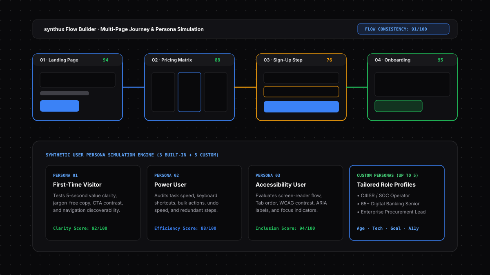

Users do not experience web pages in isolation — they move across funnels from Landing Page to Pricing, Sign-Up, and Checkout. synthux maps entire multi-page journeys on a visual canvas and evaluates every step through distinct synthetic user personas.

Recruiting human participants for every minor sprint takes weeks. synthux gives you immediate, persona-weighted feedback in minutes.
Add any open browser tab to the Flow Builder canvas, connect pages with directional arrows, and attach sticky notes explaining campaign context or business goals for the AI to consider.
AI analyzes each screen individually and then synthesizes the entire journey—catching terminology shifts between pricing and checkout, broken back-navigation, and visual drift.
Build custom personas with specific age brackets (18–25 to 65+), tech comfort (low/medium/high), accessibility needs, and task goals so the AI evaluates strictly from that user's perspective.
Select a single persona for fast targeted feedback, or combine multiple personas to compare how different users experience the same page.
Unfamiliar with your brand, navigation, and layout. Evaluates whether the page communicates its purpose within 5 seconds without insider jargon.
Experienced specialist who values speed, keyboard shortcuts, batch operations, search/filtering, and instant undo/recovery above all else.
Relies on screen readers (VoiceOver, NVDA, JAWS), keyboard-only navigation, high contrast (4.5:1+), and semantic HTML landmarks.
Define your own target user by combining Age Range, Tech Familiarity, Accessibility Needs (Vision, Hearing, Motor, Cognitive), and a concrete Page Goal.
Click the "Flow Builder" button in the synthux side panel header, or right-click any page in Chrome and choose "Analyze in synthux Flow".
Yes. Flow Builder includes Multi-Flow Save & Load in local browser storage, preserving your page nodes, thumbnails, connectors, sticky notes, and analysis results.
100% offline, on-device UX and cognitive-load auditing via Ollama for classified C4ISR systems, defense software, and core banking intranets.
Audit fee and exchange-rate transparency, irreversible transaction guardrails, numeric input formatting, and session security indicators.
Detect cart abandonment triggers, forced account creation friction, hidden shipping costs, and product filtering gaps before release.
Evaluate high-density data tables, empty-state onboarding, bulk action ergonomics, keyboard shortcuts, and destructive action guardrails.
Combine deterministic axe-core WCAG 2.2 AA checks with AI screen-reader and keyboard-only persona evaluation and code fixes.
Connect Google Antigravity, Claude Code, Cursor, OpenAI Codex, and Windsurf to the synthux Chrome extension via Model Context Protocol.